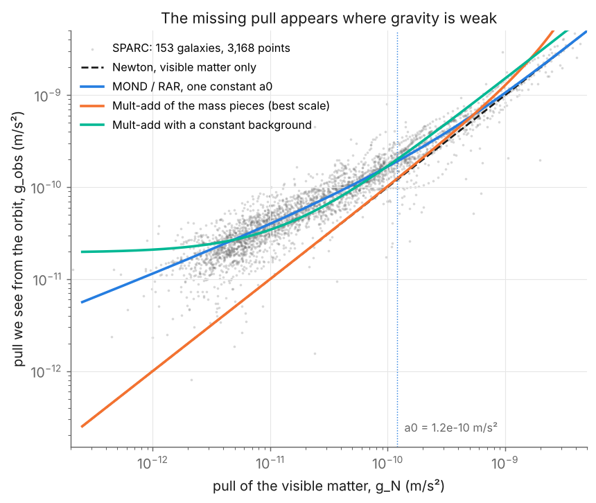
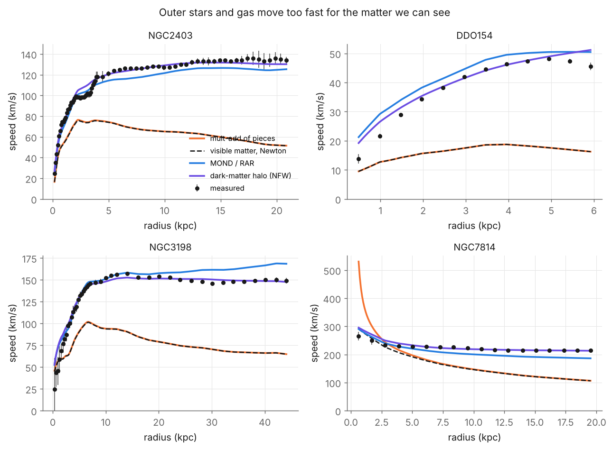
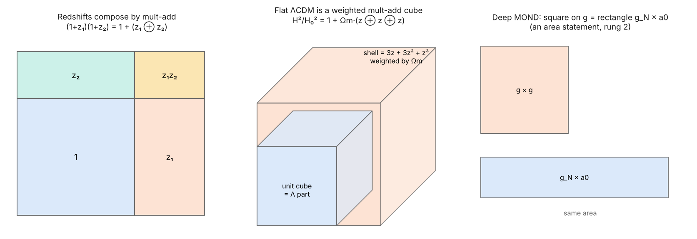
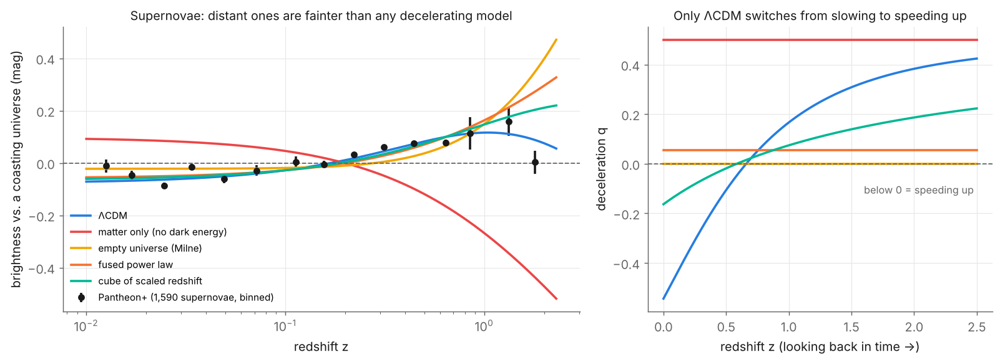
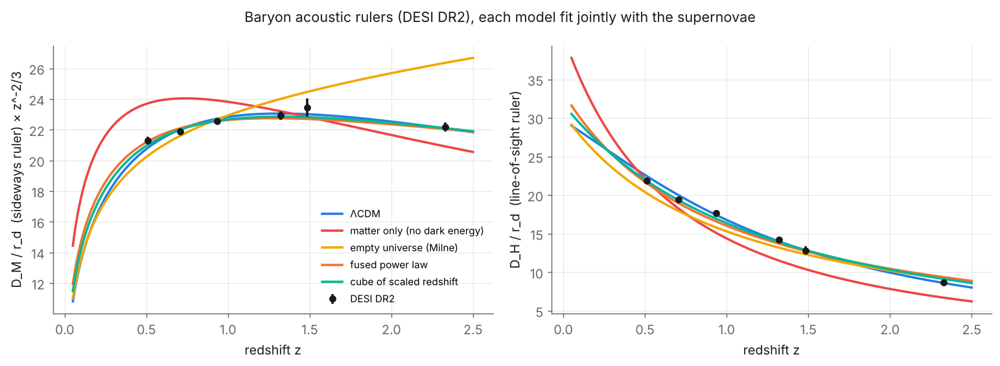

Combining gravity by the circle operation ∘₁ (called mult-add before 1.0) boosts the pull where it is already strong, but the missing pull in galaxies shows up where gravity is weak. And every fused expansion law that drops the cosmological constant is ruled out once supernovae and the DESI acoustic rulers are fit together.
What the algebra does give is an exact geometric picture: redshifts compose by the circle operation, the standard model's expansion is a circle-operation cube with dial k, a cosmological constant is "growth that composes by the circle operation", and the next rung up cannot carry expansion at all. Nineteen of these statements are proved in core Lean.

Each grey dot is one point on one galaxy's rotation curve. Below about 1.2e-10 m/s² the dots leave Newton's dashed line. The blue MOND curve follows them with one constant. The orange circle-operation curve can only bend up at the strong end.
Both names are placeholders for a gap between what we see and what known physics predicts from the matter we can see. Any rival idea, yours included, has to close every line of evidence below at once, not just one.
The simplest fit is Einstein's cosmological constant Λ: a fixed energy per volume of empty space. That is the "Λ" in ΛCDM, the standard model, with CDM for cold dark matter.

Four SPARC galaxies. Dashed: what the visible matter predicts. Orange: circle-operation gravity at its best-fit scale, which overshoots in the bright bulge of NGC7814 and changes nothing in the faint outskirts. Blue: MOND with one constant for all galaxies. Violet: a dark-matter halo with two numbers per galaxy.
To combine two pulls by the circle operation you need a scale s to make them dimensionless: g₁ ⊕ g₂ = g₁ + g₂ + g₁g₂/s. Everything below was fit to the same 153 SPARC galaxies (quality flags 1 to 2, inclination at least 30°, 3,168 points), with stellar mass-to-light fixed at the standard 0.5 (disk) and 0.7 (bulge).
| Model (fixed mass-to-light) | χ² | numbers fit | gap closed | best scale |
|---|---|---|---|---|
| Newton, visible matter only | 1,952,253 | 0 | 0% | |
| The circle operation of many small pieces (exp map) | 1,930,598 | 1 | 1.1% | s = 2.1e-9 |
| The circle operation of gas, disk, bulge | 1,859,864 | 1 | 4.7% | s = 1.17e-10 |
| The circle operation with a constant background | 284,221 | 2 | 85.4% | k = 0.50, s = 3.9e-11 |
| MOND simple μ (= minus circle inverse) | 162,678 | 1 | 91.7% | a0 = 1.17e-10 |
| MOND / RAR (McGaugh 2016) | 163,039 | 1 | 91.6% | a0 = 1.21e-10 |
| Dark-matter halo (NFW) | 19,338 | 306 | 99.0% | 2 per galaxy |
Gap closed = drop in χ² relative to Newton. Raw χ² are large for every model because the quoted speed errors leave out distance and inclination uncertainties; compare rows, not absolute values. With mass-to-light free per galaxy: Newton 685,295; the circle operation 685,295 (it falls back to Newton); MOND 37,633 at median 0.41; NFW 10,774. On χ² alone halos win, even after the BIC penalty for 2 to 3 numbers per galaxy; MOND's case is that one constant does almost as well.
Why circle-operation points the wrong way, as geometry. Pulls a and b combined by the circle operation make the rectangle (1+a)(1+b): the plain sum plus a corner ab. The corner is never bigger than a quarter of the square on the sum (4ab ≤ (a+b)², proved). So as pulls get weaker the corner shrinks faster than the pulls do. Dark matter needs the opposite: the extra is biggest exactly where pulls are weakest.
Solar-system check: the exp map adds a fraction g/(2s) to the pull. Planetary ranging pins down the Sun's pull to better than one part in a billion, the same for every planet. Taking one part in a billion at Mercury forces s above about 2e7 m/s², around 1017 times larger than the galaxy scale. So the corner term cannot be at galaxy scale and also leave the planets alone.

Light stretched by 1+z₁ and then by 1+z₂ is stretched by their product. So the total redshift is z₁ ⊕ z₂, and n equal stretches give the circle power. ln(1+z) is the linear variable: it counts e-folds of expansion. This is exact and needs no model. (Relativistic speeds are a sibling: (u+v)/(1+uv), straightened by rapidity.)
Matter thins out with volume, so it rides on the (1+z) cube: one unit cube, 3 slabs, 3 bars and one small cube (Pascal 1, 3, 3, 1). Λ is the unit cube that never grows. Matter is the shell around it, every layer weighted by the same Ωm.
If the fractional growth over t + s equals the growth over t combined by the circle operation with the growth over s, the scale factor is exponential: 1 + A(t) = (1 + A(1))t. That is constant-rate (de Sitter) expansion. So in this language, dark energy is defined as the part of expansion whose growth fractions compose by the circle operation on rung 2.
Try one rung up: growth over t + s is A(t) ⊛ A(s), the fused exponent, in either order. If nothing has grown at time 0, nothing ever grows (proved, three lines). Exponentiation is not symmetric, but time is. So the cosmological constant is the highest rung that can carry expansion. This is a clean structural fact, not evidence for or against Λ.
Supernovae (Pantheon+, 1,590 with z > 0.01, full covariance) fix the shape of distance against redshift; brightness zero point and H₀ are marginalised. DESI DR2 BAO (13 measurements) fixes the shape again with one ruler number. A real explanation must fit both with the same parameters. As a check, ΛCDM gives Ωm = 0.332 ± 0.018 from supernovae, matching the published Pantheon+ value.
| Expansion law | In fused terms | extra numbers | SN χ² | BAO χ² | joint χ² | vs ΛCDM |
|---|---|---|---|---|---|---|
| Flat ΛCDM | unit cube + Ωm-weighted shell | 1 | 1402.9 | 10.3 | 1416.1 | 0 |
| wCDM (w free) | shell + a tilted "unit cube" | 2 | 1402.5 | 9.0 | 1411.5 | −4.6 |
| Cube with free weight per layer | 1 + w₁·3z + w₂·3z² + w₃·z³ | 3 | 1402.4 | 5.8 | 1410.9 | −5.2 |
| Cube of scaled redshift | (1 + λz)³, one number | 1 | 1405.1 | 40.3 | 1499.5 | +83 |
| Fused power law | distance = ((1+z)β − 1)/β | 1 | 1411.3 | 97.0 | 1661.2 | +245 |
| Flat coasting | distance = ln(1+z), the linear variable | 0 | 1508.4 | 187.1 | 1695.5 | +279 |
| Empty universe (Milne) | distance ∝ (z ⊕ z)/2 | 0 | 1451.4 | 568.6 | 2020.0 | +604 |
| Matter only, no dark energy | shell with no unit cube | 0 | 2101.1 | 1420.2 | 3521.3 | +2105 |
A Δχ² of +83 means odds of order e41 to one against. The fused power law fits supernovae alone nearly as well as ΛCDM (β = 0.29), but supernovae and BAO then ask for opposite β, because a power law has one fixed deceleration and the data need a switch from slowing to speeding up.

Left: supernova brightness against a coasting universe (supernova-only fits). Right: deceleration q(z) from the joint fits. Only ΛCDM, and the free-weight cube that contains it, cross from slowing (q > 0) to speeding up (q < 0) near z ≈ 0.6.

The DESI rulers. The matter-only and empty universes miss badly; the fused power law and scaled cube bend the wrong way at the ends.
The one fused question with live data behind it. Is the matter shell weighted the same in every layer? ΛCDM says yes. Freeing the weights gives w₁ = 0.38 ± 0.04, w₂ = 0.23 ± 0.07, w₃ = 0.37 ± 0.08: equal weights are disfavoured at χ² = 5.1 for 2 degrees of freedom (p ≈ 0.08). That is the same mild hint DESI reported as w ≈ −0.9 instead of −1, seen through the cube. Not significant yet; DESI's later data releases will sharpen it. It is a neat way to state the test, but it measures the same thing, so it is not a new prediction.
DarkSector.lean: 19 theorems, core Lean 4.37.0-rc1, no mathlib, no sorry, only the standard axioms (several use none). The physics inputs (Friedmann's equation, Newtonian superposition, the data) are given, not formalised.
| Theorem | What it says |
|---|---|
redshift_compose, redshift_power, _int | (1+z₁)(1+z₂) = 1 + z₁⊕z₂; (1+z)ⁿ = 1 + n-fold circle power; blueshifts too |
cube_layers, cube_is_mpow3 | (1+z)³ = 1 + 3z + 3z² + z³ = 1 + z⊕z⊕z |
lcdm_is_weighted_cube | Ωm(1+z)³ + (1−Ωm) = 1 + Ωm·(3z + 3z² + z³), over the rationals |
madd_growth_is_exponential | growth that composes by the circle operation over time is exponential (constant H) |
fexp_growth_trivial, ', pow_growth_trivial | rung-3 composition, either order, with no growth at t = 0 forces no growth ever |
madd_ge_add, mfold_ge_sum, madd_excess | The circle operation of non-negative pulls is at least their sum; the extra is the corner ab |
corner_le_quarter | 4ab ≤ (a+b)²: the corner fades as pulls weaken |
minv_lift, mu_is_neg_minv | x ⊕ y = 0 gives (1+x)(1+y) = 1 and (1+x)(−y) = x: MOND's simple μ is minus the circle inverse |
simple_mond_square, deep_mond_square | simple MOND as square = two rectangles; deep MOND as square = rectangle gN × a0 |